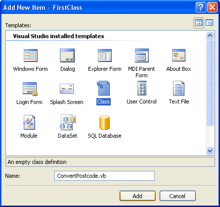
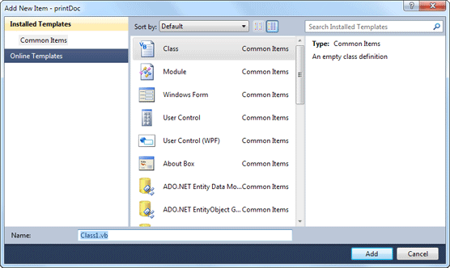
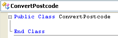

Create your own Classes in VB .NET
If you haven't yet read the introduction to Classes, here it is: VB .NET Classes and Objects.
The big benefit of an Object Oriented Programming language is that you can create your own Objects. (It's an Object when you're using the code, remember, and a Class when you're not.)
We'll see how to do that now, as we create a very simple Class, and then turn that into an Object.
The Class we'll create is a very simple one, and is intended to show you the
basic technique of setting up a Class, then creating an object from it. The
Class we'll create will convert the letters in a postcode to uppercase. We'll
get the postcode from a textbox on a form. Off we go then.
- Start a new VB .NET project
- Add a Textbox to your form, and leave it on the default Name, TextBox1
- Change the Text Property to ts1 4jh (make sure the letters are lowercase and not upper, because our object will convert it.)
- Add a Button to your form
Once you have a new form with a Textbox and a Button on it, you need to add a Class. This is quite easy. It's just like adding a Module. In fact, they look exactly the same!
- So from the VB menu bar, click on Project
- From the drop down menu, click Add Class
- You'll get this dialogue box popping up in version 2008:

In version 2010, the dialogue box looks like this (version 2012 will be a less colourful version of the one below):

The Class Template on the right will already be selected. The thing you need to change is the Name at the bottom. The default Name is Class1.vb. This is not terribly descriptive, and you'll have great problems working out what this class does, a few months down the line.
Change the Name from Class1.vb to ConvertPostcode.vb. Then click the Open button.
When the code window for the class opens up, it will look like this:

As you can see, there's not a great deal to look at! All we have is the Public Class … End Class code stub. The name of our Class is also there. But the code is in a separate window, and has a tab all to itself. It's this tab full of code that you reuse and turn into an object.
What we have to do now is add the code that does the work - converts our postcode. But we can't just write this:
Dim ConvertPostcode As String
ConvertPostcode = StrConv( TextBox1.Text, VbStrConv.UpperCase )
TextBox1.Text = ConvertPostcode
That would be all right for the button on our Form. But it's not all right for our Class. When you're designing a Class, your code has to go inside of things like Functions and Subs. You'll also see how to create your own properties for your objects.
When you set up a Function or Sub, you're actually creating Methods for your objects (A Method is code that actually does something, that performs an action. Converts a postcode in our case.) We'll see how to do that next.